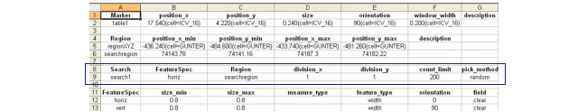

Searches are
specified only from a CSV file.
Figure 1 illustrates an example
Figure 1. Example CSV Table With Search Highlighted
Prerequisites
Before starting this procedure,
you should have the following:
Procedure
- To set up the search:
- In the CSV file, create a
FeatureSpec object.
- Create a Region object.
- Create a row under the Search
title for your search object.
- Fill in the properties to
link the FeatureSpec and Region entries.
- In CMi, select Read Text Objects from File and
specify your CSV table.